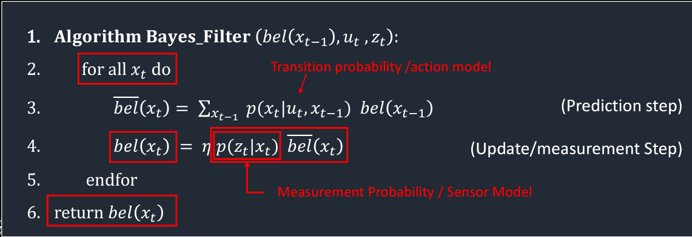
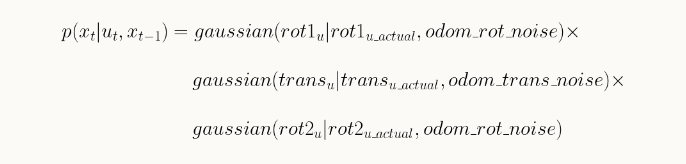
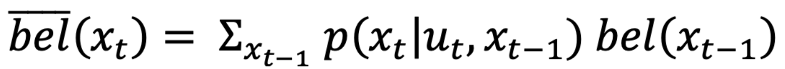
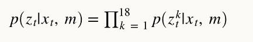

Lab 10: Grid Localization using Bayes Filter
Zhiyuan Zhang
Introduction
In this lab, we applied the Bayes filter for grid-based localization. Our objective was to simulate a robot navigating a predetermined and preprogrammed path. At each time step, we employed the Bayes filter to ascertain the robot's location (localization).
Lab Procedure And Result
Grid in Simulator
In this lab, robot localization refers to determining the robot's state (coordinates and orientation) after each movement. The robot's state in the simulator is defined as a 3D representation with (x, y, θ) coordinates. The robot's environment (grid map) encompasses a continuous space, extending from:
- [-1.6764, +1.9812) meters or [-5.5, 6.5) feet in the x-direction.
- [-1.3716, +1.3716) meters or [-4.5, +4.5) feet in the y-direction.
- [-180, +180) degrees along the theta axis.
The virtual robot shown in the simulator image starts at the initial state of (0, 0, 0). The X-axis increases from left to right, the Y-axis increases from bottom to top, and the Theta-axis increases when the robot spins clockwise and decreases when it spins counter-clockwise.
3D Grid
The grid map is divided into uniformly sized cells. Each grid cell has dimensions of 0.3048 meters along the x and y axes, and 20 degrees along the θ axis. Consequently, the continuous state space is discretized into cells as follows:
X-axis cells: [0, 12); with a 0.3048-meter resolution.
Y-axis cells: [0, 9); with a 0.3048-meter resolution.
Theta-axis cells: [0, 18); with a 20-degree resolution.
Bayes Filter Algorithm
In this lab, the main work is to implement the byes Algorithm above
Implement Compute_Control
The First function to implement involves calculating the actual action the robot takes to transition from one state to another (the robot's first movement step).
The action can be broken down into three stages, as illustrated below:
- The robot must rotate by a specific angle (delta_rot1) to align itself with the next state's position.
- Next, it moves (delta_trans) to a new grid cell on the map.
- Finally, the robot rotates to a new angle (delta_rot2) to arrive at its intended state.
By employing basic trigonometry, I utilized the inverse tangent and the difference between the current and previous poses along the x and y axes to determine the initial rotation. Subsequently, I applied the Pythagorean theorem and the difference between the current and previous poses along the x and y axes to compute the translation. Lastly, to obtain the third rotation, I subtracted the initial rotation and the previous pose rotation from the current pose and normalized the result. The code for this function is provided below:
Odometry Motion Model
This function computes the likelihood of reaching the current state (cur_pose) given a control action (u) and the robot's previous state (prev_pose). In this case, the provided control action (u) may differ from the actual action calculated using the previously defined function, compute_control, which we can refer to as the actual action.
To calculate the probability, a Gaussian function is used to model noise, with a mu representing the mean and a sigma representing the standard deviation.The probability can be computed as:
The code below shows implementation of the formulas:
Prediction Step
Subsequently, I developed the prediction_step function, which corresponds to the following components of the Bayes Filter:
The code below shows implementation of the formulas:
Sensor Model
This function calculates the probability of accurate sensor distance measurements given the current state. As with the previous example, the probability is derived using a Gaussian function. The function needs an input, 'obs', which contains the true (accurate) distance measurements for a state. The sensor-measured distances can be accessed by calling the 'loc.obs_range_data' variable. Consequently, the probabilities for each of the 18 sensor measurements can be computed and stored in a single array.
Update Step

This function primarily updates the 'bel' matrix with the probability distribution representing the robot's estimated location based on sensor measurements and 'bel_bar'. To achieve this, I employed three nested for loops, one for each dimension. Within the innermost loop, I essentially translated line 3 of the Bayes Filter into Python code. Lastly, I normalized the results. The code for this function is provided below:
Result of Bayes Filter Implementation
With the Bayes Filter fully developed, it's now time to implement and assess its performance. In the video below, the "Trajectory Plotter" displays three lines with distinct colors as the robot moves:
- The green line illustrates a pre-programmed trajectory used as the ground truth to test the Bayes Filter.
- The red line signifies odometry readings, which are the noisiest and least accurate.
- The blue line represents the belief calculated by the implemented Bayes Filter algorithm, which closely aligns with the ground truth line.
It is evident that the blue line (belief) closely aligns with the green line (ground truth), while the odom falls significantly short in accuracy. In the second video featuring white boxes, a whiter box indicates a higher probability of movement.